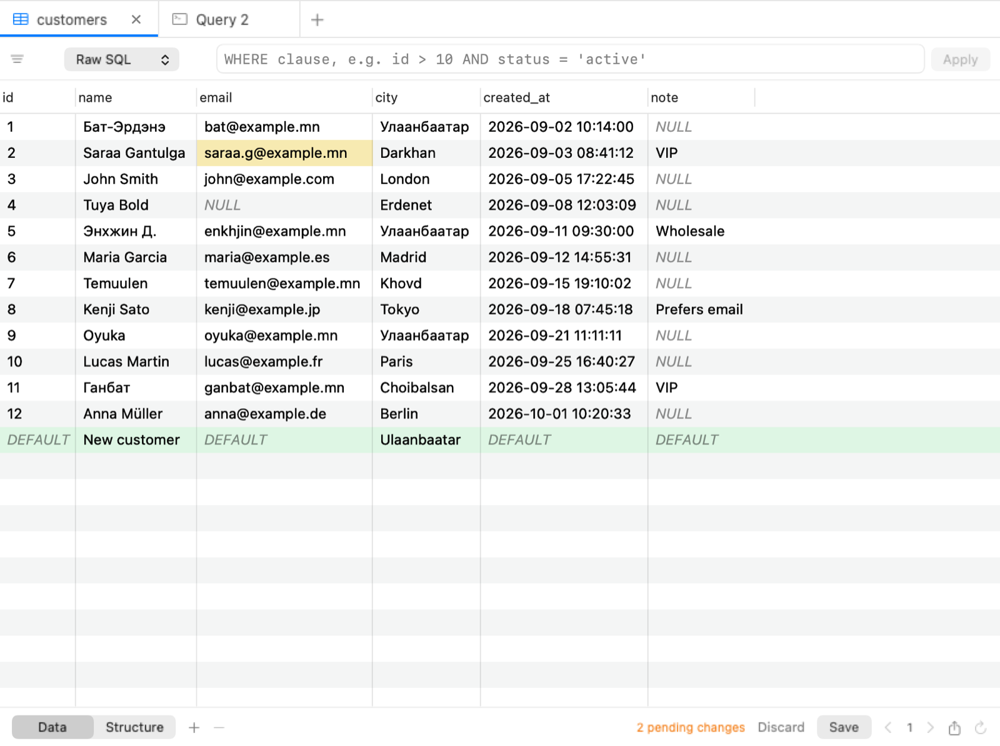
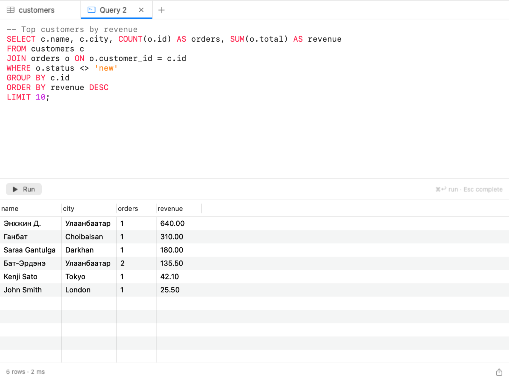
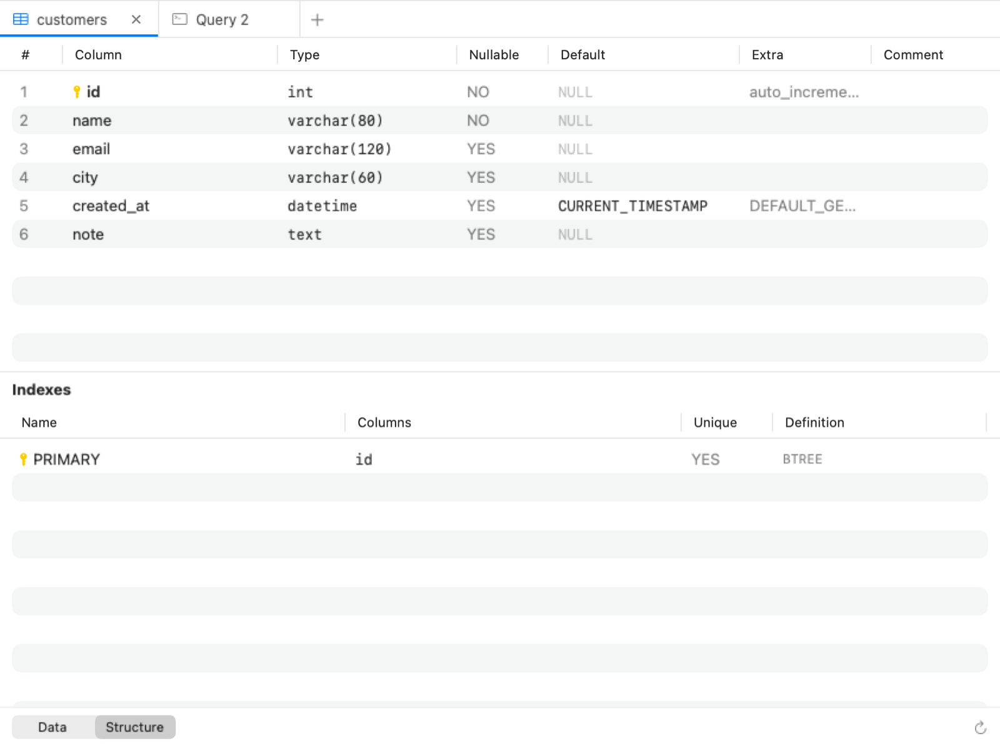

Table-үүдээ үзэх, өгөгдлөө шууд засах, SQL ажиллуулах — илүүц зүйлгүй, Mac-д төрсөн мэт ажиллах database клиент.



Өдөр тутмын database ажилд хамгийн их хэрэглэгддэг зүйлсэд төвлөрсөн.
SwiftUI + AppKit дээр бичигдсэн. Албан ёсны libpq, libmysqlclient сангаар шууд холбогдоно — Electron биш.
Нүдийг double-click хийж засах, мөр нэмэх, устгах. Өөрчлөлтүүд тэмдэглэгдэж, нэг transaction-д хадгалагдана.
Багана + оператор + утга эсвэл шууд WHERE бичнэ. Багана дээр дарж эрэмбэлж, хуудаслан үзнэ.
Өнгөт тодруулга, автоматаар гүйцээх, олон statement. ⌘↩ дарж ажиллуулна, сонгосон хэсгийг ч ажиллуулж болно.
Database, schema солих, table болон view, багана, индексийн бүтцийг харах. SSL дэмжинэ.
Нууц үг macOS Keychain-д хадгалагдана. Ямар нэг telemetry байхгүй. MIT лицензтэй нээлттэй эх.
Нэг минут хүрэхгүй хугацаа.
KitelabDB.dmg файлыг татаж аваад нээнэ.
Kitelab DB-г Applications хавтас руу чирж оруулна.
Апп Apple-аар notarize хийгдээгүй тул анх нээхэд macOS анхааруулга өгнө. System Settings → Privacy & Security хэсэгт Open Anyway дарна, эсвэл:
xattr -dr com.apple.quarantine "/Applications/Kitelab DB.app"
Kitelab DB нь бүрэн нээлттэй эх кодтой, release файлууд GitHub Actions дээр эх кодоос шууд build хийгддэг. SHA-256 хяналтын нийлбэрийг release хуудаснаас шалгаж болно.